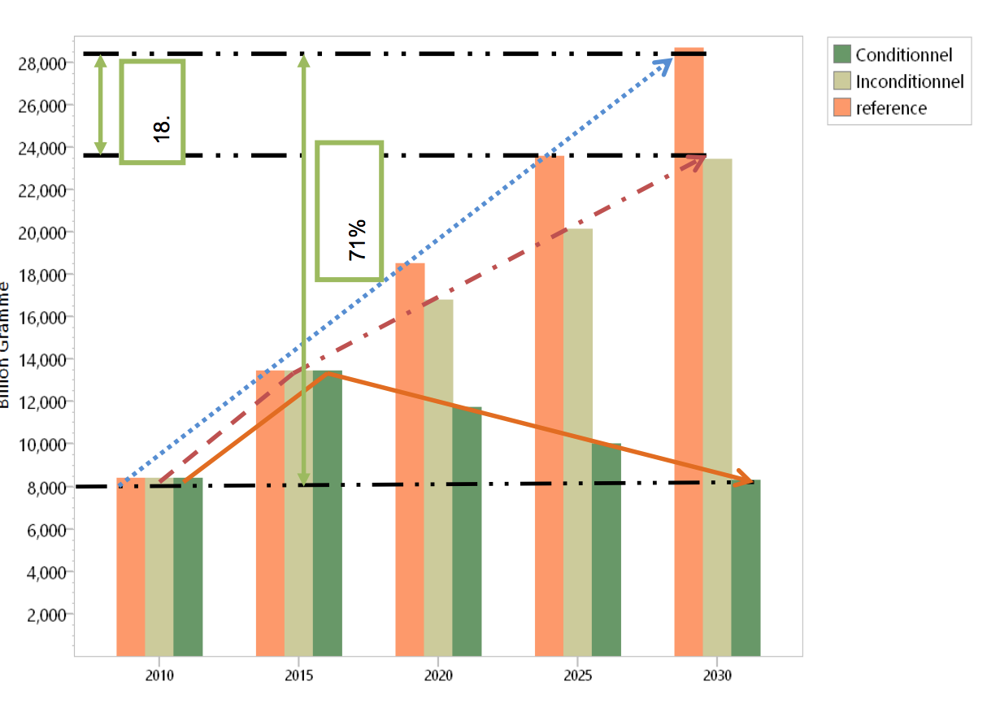

September 2015
Contribution |
|
National Objectives |
|
Emissions for the reference year (2010) |
|
Cumulative reduction of emissions for the period 2015- 2030 |
|
Coverage and scope of the contribution |
|
Implementation process |
|
Assumptions and methodology |
|
Adaptation |
|
Funding needs |
|
Environmental and fair character |
|
Chad, a landlocked sub-Saharan country, lacking a coastline, covers a surface area of 1,284,000 km2, the majority of which is desert. The country’s main economic activities are those associated with the primary sector, such as subsistence agriculture, livestock rearing and fishing. Despite the oil industry being relative new, with exports only having started in 2004, it is already booming. An oil refinery, which opened in 2011, meets domestic demand for oil products.
Table 1.Key data for 2010 (reference year)
| Surface Area | 1,284,000 km2 |
| Climate | Three climate zones: Saharan, Sahelian and Sudanian |
| Population | 11,679,974 inhabitants (2nd National Census, 2009 including refugees), of which 21.9% live in urban areas and 46.4% are of working age. The natural rate of growth is 3.6% per year |
| GDP | 5,249.6 billion FCFA |
| GDP structure | Oil: 37%; Agriculture: 21%; Trade: 13%; Other sectors: 29 |
| Rate of access to electricity | 3.9% |
| Proven oil reserves | 1.5 billion barrels |
| Oil production | 122,500 barrels/day on average |
| Rate of access to sanitation facilities | 23% in urban areas, 4% in rural areas |
| Rate of access to drinking water | 43% on a national level. |
Over the last ten years, Chad’s Saharan and Sahelian zones have spread 150 km south. This has resulted in reduced farming and pasture areas, which, in turn, has lead livestock rearers and farmers to move to more suitable areas to work, leading, in general, to a reinforcement of existing inequality and discrimination amongst certain populations. Likewise, Lake Chad has reduced in size from 25,000 km² in 1960 to 2,500 km² today. This reduction has considerably impacted upon crop and fish production, and forced inhabitants to move to wetter areas.
With the increase in oil exploitation, exporters of agro-pastoral products have lost ground to oil exporters, with oil representing 88% of exports in 2010, against 6% for livestock, 2% for cotton fibre and 4% for other products.
The state of the National Electricity Company’s (SNE), production facilities exclusively thermal, explains the high cost of electricity production, which represents an obstacle to the competitiveness in the Chadian economy, in particular in terms of industrial and commercial activity. The absence of an interconnected national grid makes economical pooling of the energy generated impossible, instead favouring the proliferation of isolated and onerous production facilities to supply the different cities across the country, which makes electricity expensive.
In line with its Government policy guidelines for development, Chad aspires to become an emerging country by 2030. In this regard, the Government intends, amongst other things, to reinforce environmental protection, GHG emissions mitigation measures and adaptation actions in respect of climate change.
The issue of environment protection is enshrined in articles 47 and 52 of the Constitution of Chad, and Act N°014/PR/1998 defines the general principles for protecting the environment. In 1992, Chad signed the United Nations Framework Convention on Climate Change (UNFCCC), which was ratified on 30 April 1993. Since then, the country has produced the Initial and Second National Communications relating to climate change, in accordance with the relevant UNFCCC provisions. This demonstrates Chad’s desire to make an effective contribution to the global effort to combat global warming, to which the country is highly vulnerable given the fragility of its ecosystems and its economy, which is highly dependent on sectors that are sensitive to climate change.
In the face of development challenges, Chad is ready to fight against climate change and adapt to its impacts by making efforts to protect the environment, in particular through activities such as planting thousands of trees each year and implementing the national programme for the development of green belts around Chadian cities. In addition to these green belts, ten million trees are being planted as part of the African Great Green Wall initiative, and National Tree Week has been officially launched. Chad has also established a Special Fund for the Environment (FSE) in 2013, in order to mobilise its own resources through the establishment of specific taxes.
Under this INDC, Chad intends to reaffirm its determination to contribute to the global effort to reduce GHG emissions and reinforce its resilience to climate change, implementing coherent programmes which will enable it to become an emerging country by 2030, whilst favouring low-carbon development, as far as possible with the means available. The largest challenge to overcome is the move, between now and 2030, from a development model based on oil revenue, to a model based on a more diversified economy with sustainable utilisation of resources and an energy transition.
Chad supports the Lima summit’s call for action on climate change, as cited in the decision 1/CP.20, which called for each Party country to establish a nationally determined contribution in order to achieve the Convention’s objective. Chad’s contribution is based on measures and results.
The impacts of climate change are significant on the large hydrographic systems of the basins of Lakes Chad and Niger: natural, agro-silvo-pastoral, fishery and human systems. They include changes to the agricultural seasons, disturbances in the biological cycles of crops and a reduction in cereal crop production. Depending on the geographic zone, climate change exposes certain sectors and social groups to a medium to high level of vulnerability (1 = very high, 6 = lower), according to the NAPA and consultations carried out during the workshop launching the INDC preparation process.
Whilst the actions are applicable to all of Chad, it appears that the priority target zones (Kanem, Barh El Ghazal, Batha, Guéra, Hadjer Lamis, Wadi Fira; Ouaddai, Dar Sila, Lac, Moyen-Chari, Borkou, Tibesti, Ennedi Est, Ennedi Ouest) are especially vulnerable to the effects of climate change and, in part, to the arrival of displaced populations. There are approx. 700,000 displaced people in Chad, including refugees and Chadians returning from Sudan, the Central African Republic, Nigeria and Libya (OCHA, 2015).
The cost of national priorities, in terms of adaptation to climate change, are met on the one hand by the National Investment Plan for the Rural Sector (PNISR), covering the period 2014 – 2020 and validated in 2014, and on the other by the meeting held by the Food Crisis Prevention Network (RPCA) in March 2015, which put forward the Country Resilience Priorities (PRP) AGIR CHAD for implementation by 2020, which would help approx. 6.5 million people escape food and nutritional insecurity
The PNISR, using an initial amount of 2,301.7 billion CFA francs for the period 2014-2020, estimate that, by 2030, by applying an annual population growth rate of 3.6% and an annual inflation rate of 2.9% [3], this amount will be 4,321 billion CFA francs. The overall cost of the AGIR CHAD PRP will be 775 billion CFA francs for a period of 5 years until 2020. By 2030, the total necessary funding to implement the INDC adaptation component would be 14.170 billion USD, in order to establish development resilient to climate change.
On the national level, the initiatives to support adaptation have just started within the National Adaptation Programme of Action for Climate Change (NAPA adopted in2009), in particular with financing by the EU (~5.26 billion CFA francs or 8 million Euros through the AMCC –Global Climate Change Alliance project-) for the following priority projects:
In addition to these, adaptation will be supported by the 11th European Development Fund for the period 2014-2020. This foresees the provision of 297 million euros for “rural development, nutrition and food safety”, and an amount of 53 million euros for “sustainable management of natural resources”.
Finally, adaptation is supported by the Project to Improve the Resilience of Agricultural Systems in Chad (PARSAT). The PARSAT with total funding of 36.2 million USD, co-funded by IFAD, GEF, ASAP and the Chadian government was put in place in 2015, for a period of 7 years.
At a regional level, there are:
Gaps:
Barriers:
In order to reduce vulnerability and increase resilience, adaptation needs include the reinforcement of human, institutional and technical capacities, as well as financial support and technology transfer.
Table 2.Technical needs, technology transfers and funds[4]
| Needs | Objectives and Description |
|---|---|
| Control and management of water resources |
|
| Intensification and diversification of agrarian production |
|
| Secure migration of livestock and support the combining agriculture and livestock raising |
|
| Support the use of water resources |
|
| Improve population wellbeing |
|
| Knowledge of spaciotemporal changes to the environment |
|
| Support initiatives |
|
Table 3. Base information relating to mitigation contributions
| Discounted reduction rate | ||
|---|---|---|
| Type of contribution | Unconditional contribution |
|
| Conditional contribution |
|
|
| Reference year |
|
|
| Target year |
|
|
| Cumulative reduction of emissions by 2030 |
|
|
The table below shows the emissions from the reference year and the reference scenario (BaU), emissions for the unconditional objective as well as emissions for the conditional objective, the implementation of which will be dependent on the financial support received from the international community.
Table 4.Emissions for the reference scenario and mitigation objectives
| Sector | Emissions (Gg CO2e) | ||||
|---|---|---|---|---|---|
| 2010 Survey | Reference scenario 2030 | Unconditional | Conditional | ||
| 1 | Energy | 665.2 | 2,165.00 | 2,165.00 | 1,840,2 |
| 2 | Agriculture and Livestock | 18,448.00 | 43,426.00 | 38,215.70 | 30,398.83 |
| 3 | Land use and forestry | (-)10908.77 | (-)17387.48 | (-) 17387.48 | (-) 24342.48 |
| 4 | Waste | 175.19 | 455.85 | 455.85 | 402.85 |
| Total | 8,379.62 | 28,659.37 | 23,449.07 | 8,229.45 | |
| % reduction | 18.20 | 71.00 | |||

Table 5. Scope and field of contributions
| Sector | Gas | Sub-sectors | Geographic scope |
|---|---|---|---|
| Energy | CO2, CH4, N2O | Fuel combustion,activities, fugitive emissions from fuels. | National |
| Agriculture/Livestock | CH4 and N2O | Enteric fermentation,manure management, rice cultivation, agricultural soil, controlled burning of,the savannah, burning of agricultural waste. | National |
| Land use and forestry | CO2 | Forest lands,cultivated land, grassland. | National |
| Waste | CH4, N2O | Elimination of solid,waste, Treatment of used water. | National |
The accounting method for GHG inventory in each sector is the same as that used in the IPCC 2006 Guidelines on national GHG inventories. The values used, with regards to the Global Warming Potential (GWP) for the different greenhouse gases, are those published in Appendix 3 of Decision 24, adopted by the Conference of the Parties during their 19th meeting between the 11th and 23rd November 2013. Energy demand projections for 2030 are based on the Blueprint for Chad’s energy sector. For the waste sector, the projections reflect the demographic and migratory forecasts published by the National Institute of Statistics for Economic and Demographic Studies (INSEED). In the calculations of GHG gases for the agriculture, livestock, land use and forestry sectors, in the absence of national data, the values published by the statistical division of the Food and Agriculture Organization of the United Nations (FAOSTAT) are used. The reference scenario was built considering the assumptions cited in the vision and strategy documents in place in Chad, in particular:
As a Non-Annex I Party of the United Nations Framework Convention on Climate Change (UNFCCC) and Least Developed Countries (LDC), the Republic of Chad does not intend to appeal to the international carbon markets in order to compensate for its own emissions. The country hopes, by contrast, to encourage investment in mitigation projects on its own territory, notably by means of the Clean Development Mechanism (CDM) and the REDD+ programme. These initiatives must particularly focus on sharing benefits with the local population, for example in terms of: (i) access to sustainable energy for all (ii) generation of local jobs, (iii) reducing impact on health and on the environment, (iv) reducing inequalities, including gender-based inequality and (v) respecting human rights.
The monitoring and assessment system will entail quantifying GHG emissions on a national level, as well as their evolution over time, with the aim of periodically providing robust data reflecting the country’s progress with regards to mitigation and sustainable development. A measurement, reporting and verification system (MRV) must be drawn up, with the aim of being precise but also simple. In order to reduce inherent institutional, technical, political and financial risks, it will be necessary to reinforce technical capacity, as well as research and stakeholder coordination, in order to carry out this activity. Chad encourages the Parties cited in Annex I of the Convention to technically and financially support the establishment of follow-up and assessment initiatives in Chad.
Implementing mitigation actions and reaching the GHG emission limitation objectives set out in Chad’s INDC include aspects which are conditional on the availability of international support in terms of funding, technology transfer and reinforcement of capacity. To prepare and implement mitigation projects, the country intends to request international aid from different available sources, in particular from agencies for development assistance, bilateral and multilateral financial institutions, UNFCCC financial mechanisms (Green Fund for the climate, adaptation funds, GEF etc.) and the private sector. Funding needs have been estimated at approx. 21.233 billion US$. Implementation of Chad’s INDC will place particular emphasis on better taking account of human rights and equality between the sexes.
Limiting the growth of GHG emissions represents, in itself, a great challenge for Chad, considering national circumstances. In economic terms, Chad is classed amongst the Least Developed Countries (LDC), having a GDP per inhabitant of 676 USD.
Chad suffers significant structural vulnerabilities, due in particular to the country’s isolation and its exposure to natural and climatic hazards. According to statistics from the United Nations, Chad has an Economic Vulnerability Index of 52.8, compared to an average of 45.7 in 2012 among all of least developed countries. In the face of these developmental challenges, the contribution from the Republic of Chad is ambitious, as it establishes an allowance of 2314.66 GgCO2e, on average, per year for 15 years, for the unconditional scenario. This objective will be achieved by various means, including increasing the renewable electricity supply from 0 to 750 GWh/year in 15 years, i.e. to a level equivalent to double the current total national production for all sectors included and introducing/reinforcing sustainable practices in the waste management, agriculture, livestock, land use and forestry sectors.
The established contribution is also fair as GHG emissions per inhabitant in Chad are around 0.732 tCO2e, placing them amongst the lowest in the world. In line with the unconditional objective, emissions per inhabitant in 2030 will be 1.028 tCO2e, whereas they would be just 0.364 tCO2e if means are acquired to enable the country to reach the conditional objective of a 71% reduction.
Chad intends to achieve this established contribution whilst pursuing its development objectives and using its available resources in a sustainable manner.
The table below provides a summary, with figures, of the opportunities to achieve the INDC objectives. It will only be possible to achieve the conditional objectives with contributions from the international community amounting to 17,919,837,663 USD.
Table 6. Opportunities and necessary financial means to implement the INDC[5]
| A. Adaptation | ||
|---|---|---|
| Programmes | Unconditional USD | Conditional USD |
| Develop access to water whilst ensuring it is used to its full potential | 1,176,350,000 | 950,959,00 |
| Promote water-efficient and intensive agriculture | 1,247,400,000 | 8,316,000,000 |
| Secure animal and fishery production and promote associations | 118,792,000 | 1,000,000,000 |
| Support development of fishing resources | 14,616,000 | 24,795,400 |
| Develop of renewable energies for the agriculture and pastoral sectors | 2,890,146 | 19,267,642 |
| Reinforce cloud-seeding operations to compensate for the rainfall deficit in agriculture | 18,000 | 24,000,000 |
| Strengthen meteorological and climate networks and improve weather and climate forecasting tools | 10,000,000 | 24,000,000 |
| Communication relating to climate risks and adaptation scenarios | 1,000,000 | 22.584,300 |
| Maintain initiatives in favour of the environment (FSE) | 39,421,800 | 400,000,000 |
| Improve access to agriculture production and livestock zones | 179,419,372 | 598,064,572 |
| S/total | 2,789,907,318 | 11,379,670,914 |
| B. Mitigation[6] | ||
| Interconnection of Chad-Cameroon power grids to supply Chad with hydro-generated energy of 500 GWh | 57,245,500 | 542,754,500 |
| Production of solar energy increased to 200 GWh/year, i.e. : 140 MW/year | 184,099,840 | 1,840,998,400 |
| Production of wind energy up to 50 GWh/year | 12,582,052 | 125,820,515 |
| Construction of a national 225 kv line to interconnect all cities | 70,500,000 | 550,000,000 |
| Cross-country power grid (between adjacent cities) | 40,695,402 | 406,954,023 |
| Use of butane gas and promotion of efficient domestic energy | 57,758,620 | 180,000,000 |
| Development of the agro-silvo-pastoral and fishery sectors | 9,827,586 | 825,141,380 |
| Programme of environmental protection and sustainable management of natural resources | 34,032,100 | 721,289,300 |
| CHAD REDD R-PP Project | 750,000 | 45,796,400 |
| Great Green Wall project | 15,517,240 | 144,259,000 |
| National programme for the development of green belts surrounding large urban cities | 25,862,070 | 1,035,000,000 |
| Environmental risk management | 7,782,000 | 77,820,000 |
| Waste processing plants in large urban centres | 6,649,985 | 44,333,231 |
| S/total | 523,302,394 | 6,540,166,749 |
| Overall total | 3,313,209,712 | 17,919,837,663 |
Table 7.Flowchart of activities for the INDC project
| Products / Activities | 2016-2020 | 2021-2025 | 2026-2030 | ||||||||||||
|---|---|---|---|---|---|---|---|---|---|---|---|---|---|---|---|
| 1 | 2 | 3 | 4 | 5 | 1 | 2 | 3 | 4 | 5 | 1 | 2 | 3 | 4 | 5 | |
| 1. Establishment of an institutional, legal and regulatory framework for the implementation of the INDC | |||||||||||||||
| 2. INDC launch workshop | |||||||||||||||
| 3. Communication strategy | |||||||||||||||
| 4. Reinforcement of national and sectoral capacities | |||||||||||||||
| 5. Setting up of a MRV system | |||||||||||||||
| 6. Sectoral workshops | |||||||||||||||
| 7. Finalisation of plans for priority projects | |||||||||||||||
| 8. Call to the International Community and the mobilisation of funds | |||||||||||||||
| 9. Mobilisation of climate funding | |||||||||||||||
| 10. Pilot phase of the INDC | |||||||||||||||
| 11. Acquisition of adaptation and/or mitigation technologies | |||||||||||||||
| 12. Implementation of the first priority adaptation and/or mitigation projects | |||||||||||||||
| 13. Evaluations of the first INDC reductions | |||||||||||||||
| 14. Verification | |||||||||||||||
| 15. Certification | |||||||||||||||
| 16. Preparation the implementation report | |||||||||||||||
| 17. Assessment workshop | |||||||||||||||
NAPA Chad (2009), and working groups “adaptation of workshops, dated 15 June and 24 to the 25 August 2015” ↩
A = supplements indicated during working groups “adaptation launch workshop, 15 June 2015” ↩
http://www.afdb.org/fr/countries/central-africa/chad/chad-economic-outlook/ ↩
The costs are included in the table 7 summary. ↩
Main sources: PNISR, master energy blueprint, PNSA, Agriculture transformation plan, NAPA, R-PP. ↩
The 7 latest programmes of the “Mitigation” component are going to contribute greatly to carbon sequestering. ↩